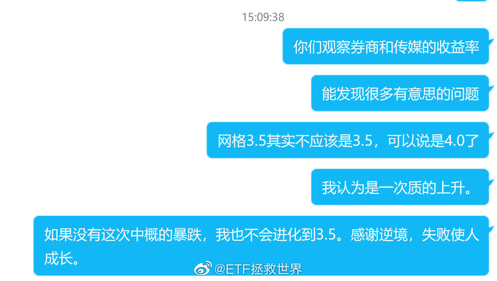

刚才我在小助理群里说的，我觉得应该分享给大家。
这是我的真实想法。
我发现每一次进化，都来源于失败。只有在失败（或者不足或者不满意）后，才会努力的去寻找解决的办法，才会最终变得更强。
我们每个人都不想失败，但失败真的是进步的契机。区别是有人面对失败充满沮丧自暴自弃，有人面对失败寻找解决办法，追求更加强大。
这是我的真实想法。
我发现每一次进化，都来源于失败。只有在失败（或者不足或者不满意）后，才会努力的去寻找解决的办法，才会最终变得更强。
我们每个人都不想失败，但失败真的是进步的契机。区别是有人面对失败充满沮丧自暴自弃，有人面对失败寻找解决办法，追求更加强大。
- 